B
The Behaviour Hive
Parent Guide
Your child's passport, in your pocket.
Trial Programme Edition
For technical help, contact daniel@thebehaviourhive.com
Contents
- Getting startedYour account, your code, and your consent
- Building your child's passportThe four sections, and the finished dossier
- Your home screen explainedThe dashboard, the daily card, and your team
- The morning check-in15 seconds that shape your child's school day
- The afternoon updateHearing how the day actually went
- Logging incidentsThe ABC log, explained simply
- Connecting your teamSchools, clinicians, and staying in control
- Help & SupportQuick fixes, FAQs, and how to reach us
Chapter 1
Getting started
Setting up takes a few minutes. Here's exactly what to expect, screen by screen.
Create your account
Tap Register and fill in your name, email, and a password. That's all we need to get started — no credit card, no faff.
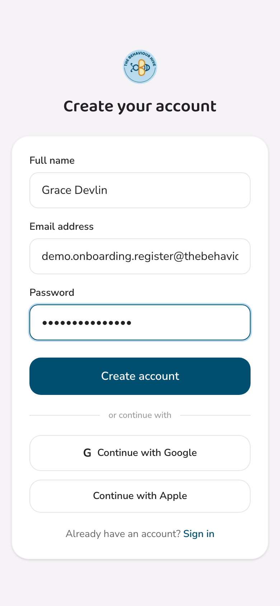
Creating your account
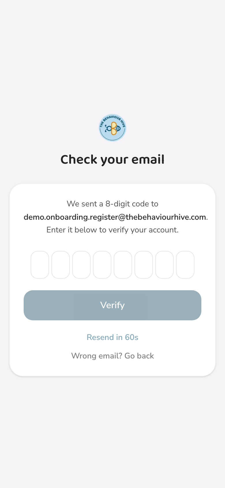
Enter the 8-digit code we email you
Check your inbox for an 8-digit code and pop it in. If it doesn't arrive within a minute or two, check your spam folder, or tap "Resend code."
Tell us who you are
Next, you'll choose your role. As a parent or carer, this unlocks the passport-building flow designed just for you.

Choose "Parent or carer"
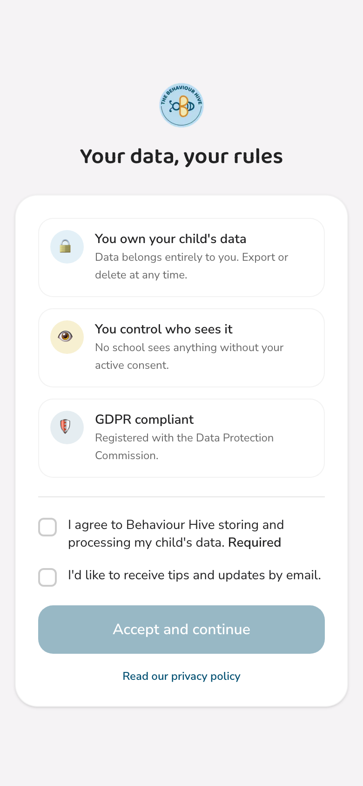
Agree to how your data is used
You control all access
Nothing about your child is ever visible to anyone — not a school, not a clinician — until you actively approve it. You can see exactly who has access at any time, and remove it whenever you choose. More on this in Chapter 7.
Chapter 2
Building your child's passport
The passport is the heart of the app — a single, living picture of your child that travels with them between home, school, and any clinicians you connect. It takes about ten minutes to build, and you can always come back and change it later.
Four short sections
We ask about your child in four parts. None of it is compulsory beyond the basics — fill in what feels useful, skip what doesn't.
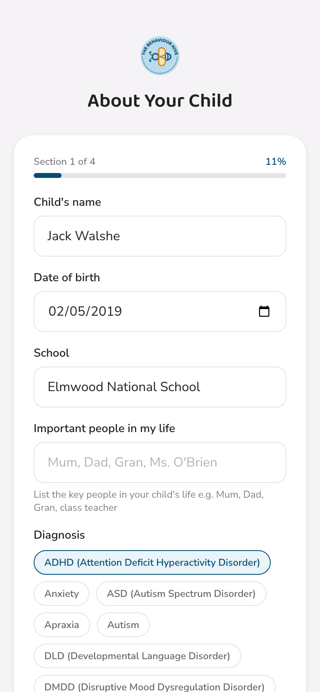
1. About your child
Diagnoses, school, key people
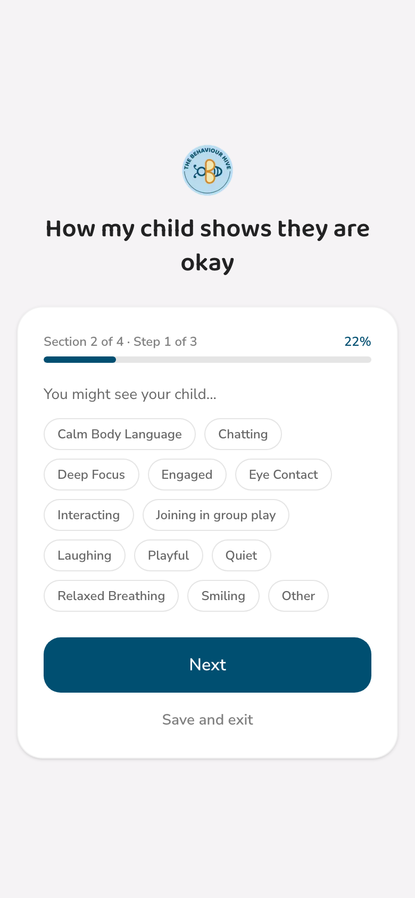
2. Signals
What "okay" and "hard" look like
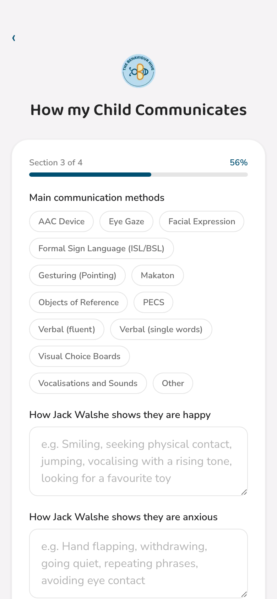
3. Communication
How your child talks to the world
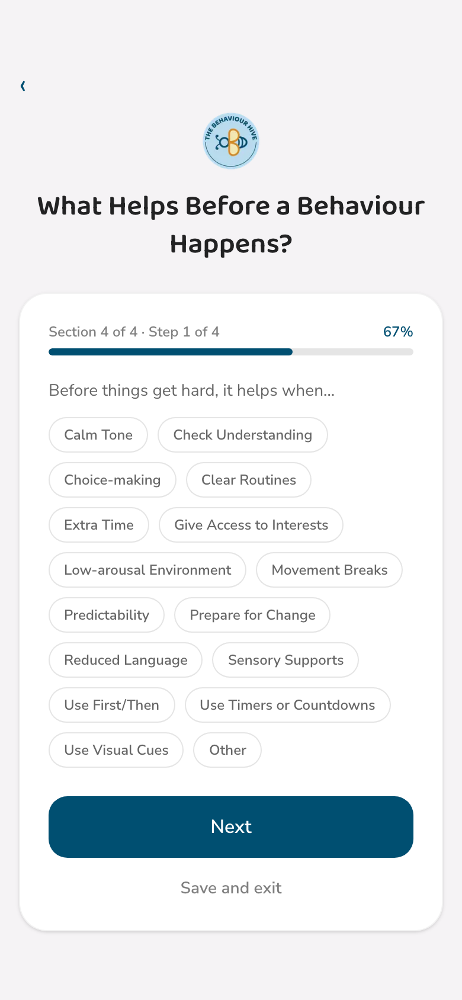
4. Support strategies
What helps, before, during and after
Everything auto-saves as you go. Close the app mid-section and pick up right where you left off — nothing is lost.
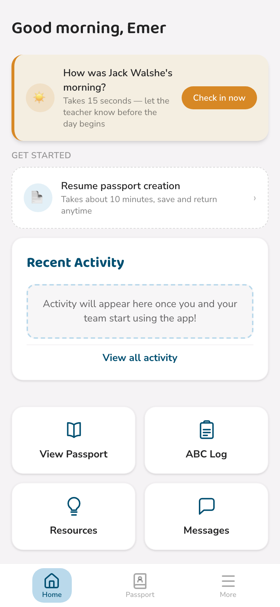
Not finished yet? Your home screen always shows a "Resume passport creation" card, so you're never hunting for where you left off.
Your finished dossier
Once complete, your child's passport becomes a beautifully organised profile you can open, read, and share at any time — we call it the Digital Dossier.
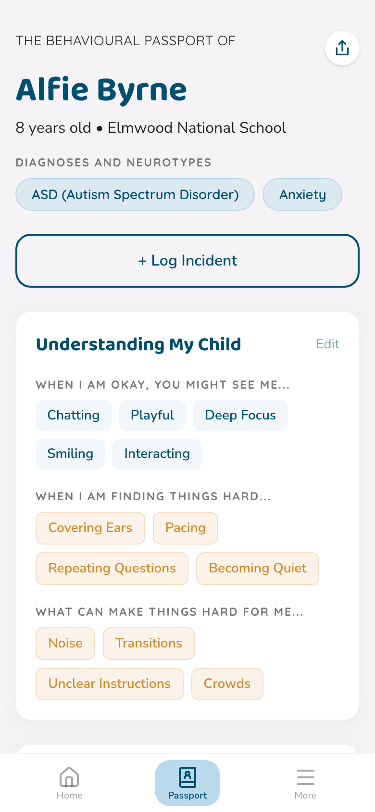
The top of Alfie's completed passport
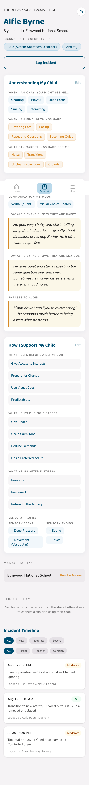
Scrolling through shows every section
Editing later
Children change, and so should their passport. Tap "Edit" on any section from the Digital Dossier, and your existing answers are all pre-filled and ready to update.
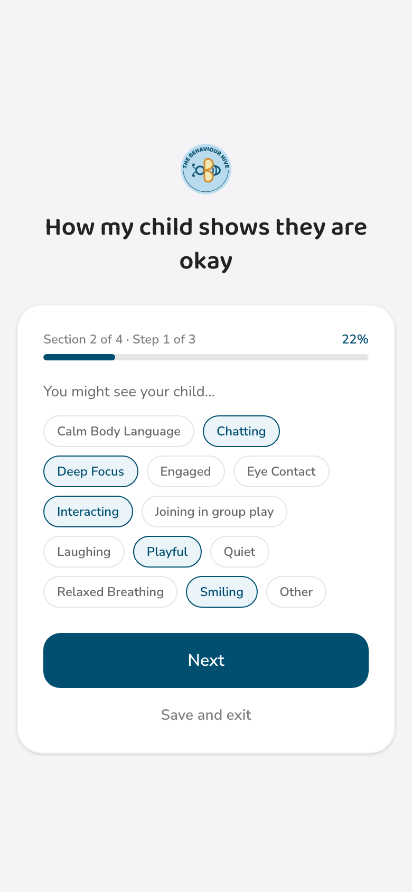
Editing a section shows what's already saved
Chapter 3
Your home screen explained
Everything you need day-to-day lives on one screen. Here's what each part does.
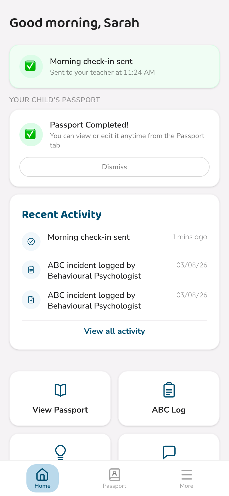
Your home screen: greeting, daily card, passport status, recent activity, quick actions, and your team — all in one place
The daily card, in all four states
The card near the top of your screen changes through the day, always showing you the single most useful thing right now.
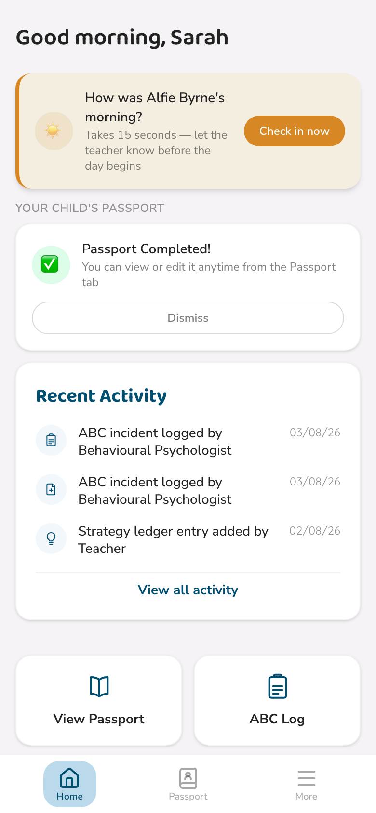
1. Morning, not checked in
A gentle prompt to check in

2. Morning, checked in
Confirmation it reached the teacher
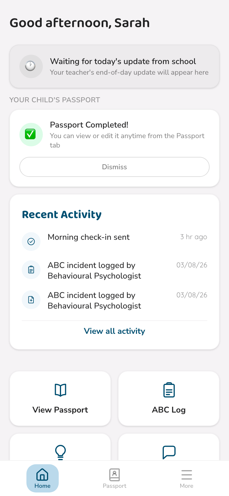
3. Afternoon, waiting
Your teacher's update hasn't landed yet

4. Afternoon, update arrived
How the day actually went
Recent Activity
A running log of everything that's happened on your child's passport — check-ins sent, updates received, incidents logged, and anyone who's connected.

The Recent Activity card on your home screen
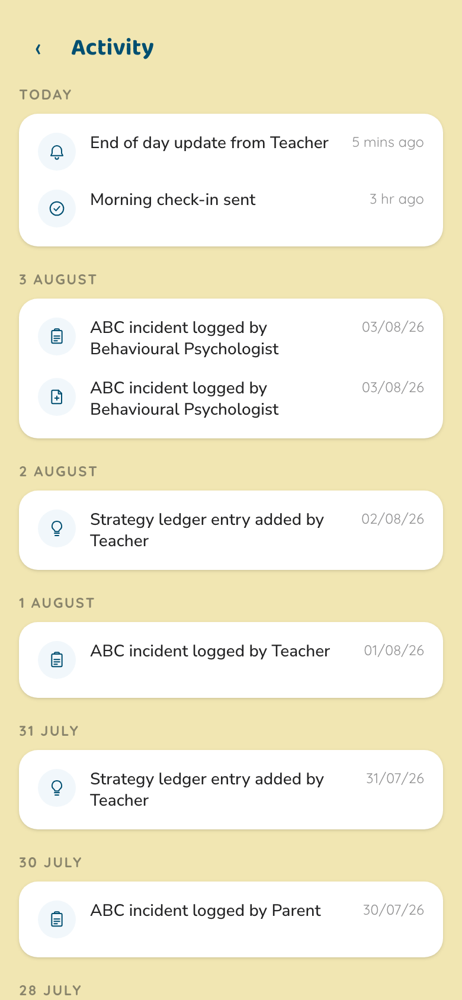
Tap "View all activity" for the full history
Quick actions
Four shortcuts sit below the daily card, for the things you'll reach for most.

View Passport and ABC Log are fully live today. Resources and Messages are still being built — they're on the way, but not functional yet.
Your Team
A quick-glance list of every school and clinician currently connected to your child's passport, with more detail available from the Manage Access screen (Chapter 7).
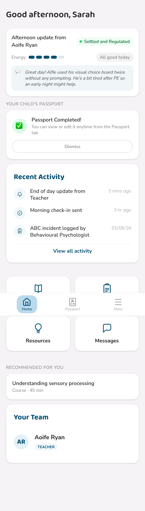
Your Team, showing everyone with current access
Chapter 4
The morning check-in
15 seconds that shape your child's school day. A rough night's sleep or a rushed breakfast can completely change how a child copes by 10am — and until now, teachers had no way of knowing. This one small habit changes that.
Before 1pm each day, your home screen invites you to check in with one tap.
Tap "Check in now" to start
Four quick taps and you're done.
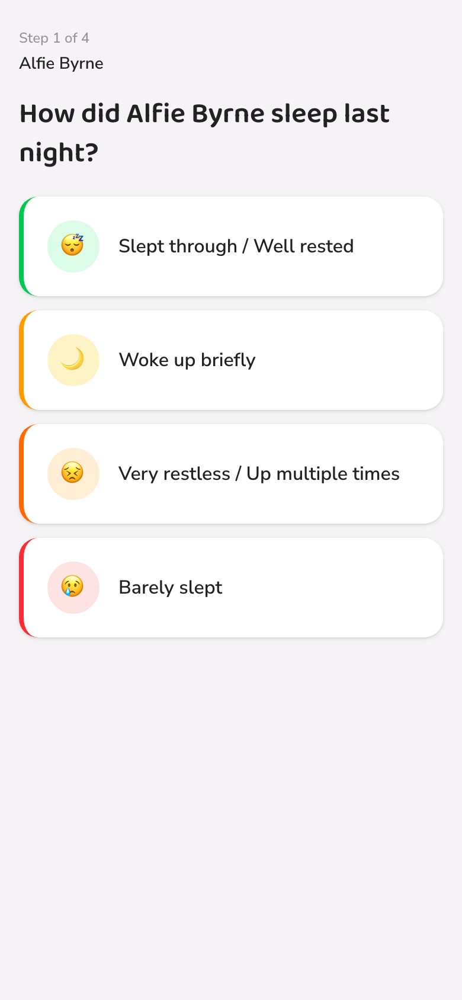
1. Sleep
How did they sleep last night?
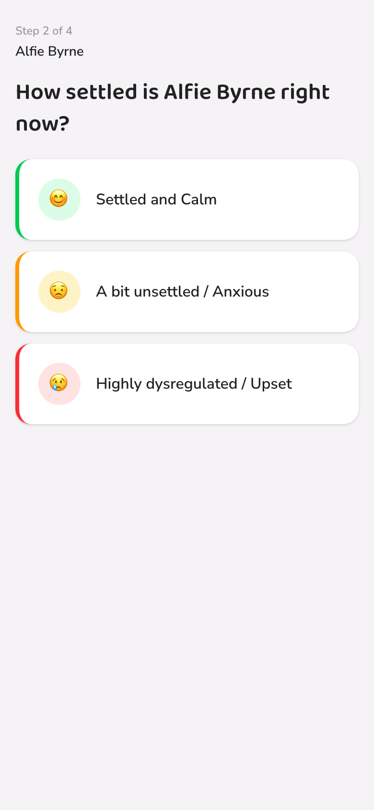
2. Right now
How settled are they this morning?
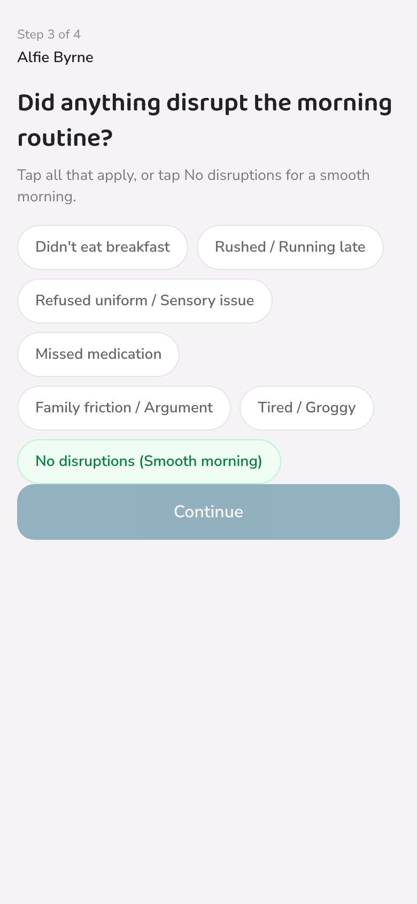
3. Disruptions
Anything unusual happen before school?
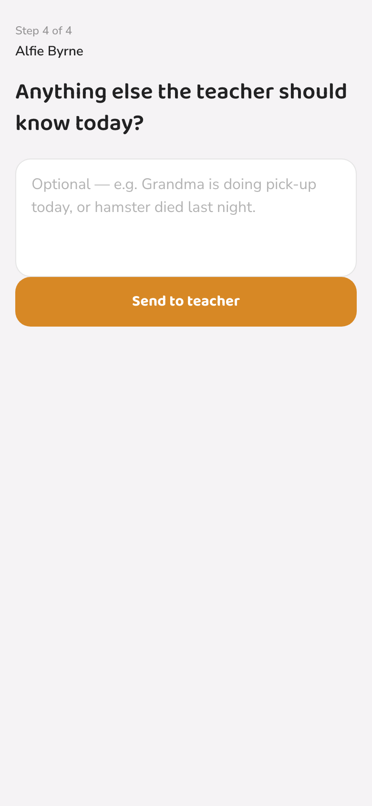
4. Anything else
An optional note for the teacher
Tap send, and it's on its way — no typing required unless you want to add a note.
What your teacher sees
Your check-in feeds straight into your child's teacher's morning view, helping them plan the day with real information instead of guesswork.

What your teacher sees: every checked-in child at a glance, colour-coded so nothing gets missed
Chapter 5
The afternoon update
Once school finishes, your child's teacher can send back a short update on how the day actually went — so you're never walking into pick-up blind.

An afternoon update: how settled they were, their energy level, any flags, and a note from the teacher
What the colours mean
The badge at the top of the update uses three simple colours, so you can tell how the day went before reading a single word.
Green — Settled and Regulated. A good day, nothing to flag.
Amber — Unsettled and Anxious. A trickier day; worth a gentle check-in at home.
Red — Highly Dysregulated. A hard day. Your teacher's note will usually explain what happened.
Below the badge, you'll also see an energy level (how tired or wired they seemed) and any flags the teacher noticed — plus a free-text note whenever they've added one.
Chapter 6
Logging incidents
Sometimes things happen — a meltdown at a birthday party, a hard moment at bedtime. Writing it down while it's fresh helps everyone around your child spot patterns over time, at home and at school.
We call this an ABC log, short for Antecedent, Behaviour, Consequence — three simple questions: what happened just before, what your child did, and what happened right after. That's it. No clinical training needed.
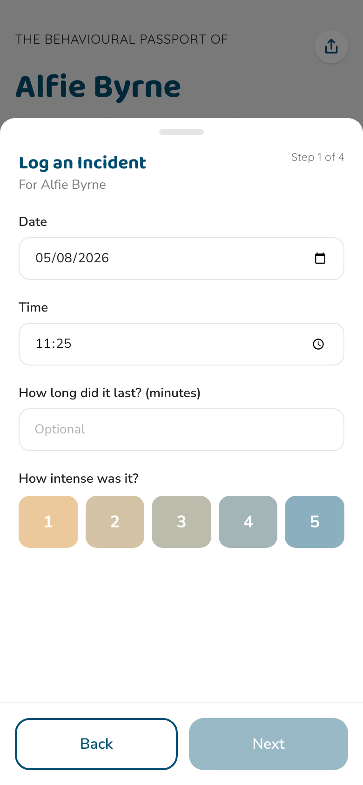
Start with when it happened and how intense it felt
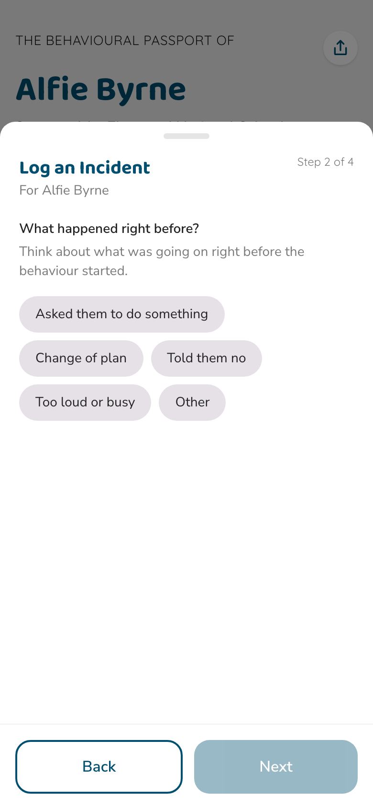
Then walk through what happened right before
You can start a log from the "ABC Log" quick action on your home screen, or directly from your child's passport. Every log you save appears in the Incident Timeline on the Digital Dossier, alongside anything logged by a teacher or connected clinician — so everyone sees the same picture.
Chapter 7
Connecting your team
Your child's passport becomes far more useful once it's shared with the people supporting them — but you decide exactly who, and you can change your mind at any time.
Sharing with a school
Open the share icon on your child's Digital Dossier. You'll see your child's own passport code — give this to their class teacher. Separately, enter your school's institution code (get this from the school) to approve the school itself.
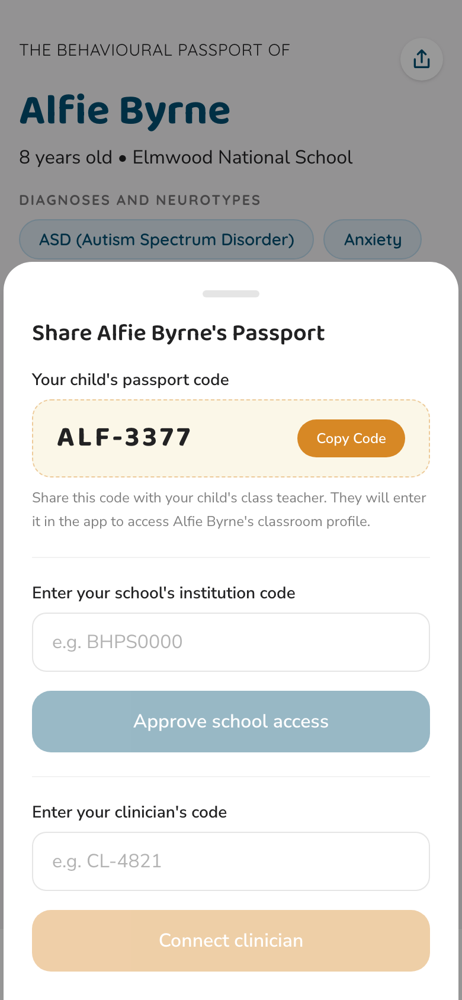
Your passport code, plus fields to approve a school and connect a clinician
Until you approve your child's school, a teacher can see only a shortened name — first name and last initial. This is deliberate: full details unlock only once you've actively said yes.
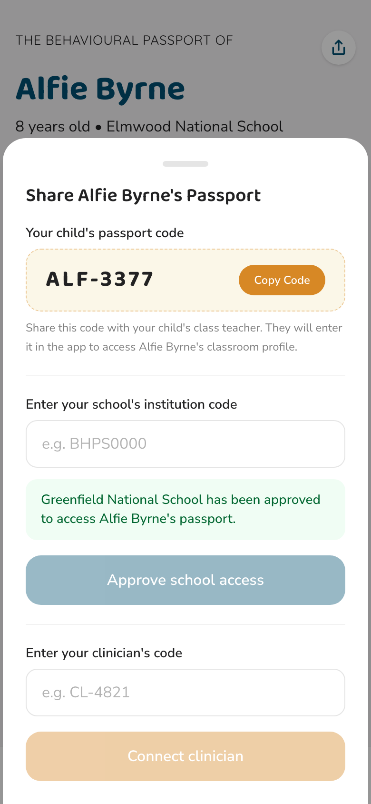
Approving a school by its institution code
Connecting a clinician
If your child works with a psychologist, therapist, or other clinician using The Behaviour Hive, enter their clinician code in the same share screen to connect them.
Manage Access
Scroll down on the Digital Dossier to see exactly who has access — every approved school and every connected clinician, in one list.
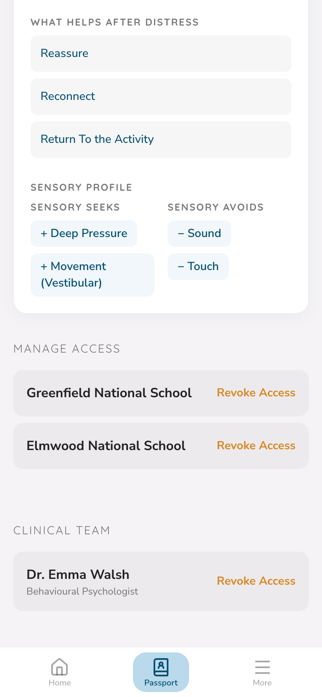
Manage Access: every school and clinician currently connected
Revoking access
Changed your mind, or a connection is no longer needed? Tap "Revoke Access" next to any school or clinician, at any time. It takes effect immediately.

A Revoke Access button sits beside every school and clinician
Chapter 8
Help & Support
Most hiccups have a quick fix. Here's where to start, and how to reach us for everything else.
Quick fixes first
The app looks out of date or something isn't loading
Close the app fully — swipe up from the bottom and swipe the app away — then reopen it from the icon.
I'm stuck on a spinning or loading screen
Check your internet connection, then force-close and reopen the app.
I forgot my password
Tap "Forgot password?" on the login screen and follow the link we email you.
The app is showing a screen I can't get out of
Close and reopen the app. If it keeps happening, note which screen it was and contact us below.
I didn't get my sign-up code email
Check your spam or junk folder first — the sender is info@thebehaviourhive.com.
Common questions
The teacher says my code isn't working.
Double-check they're entering your child's passport code (not your school's institution code) — and that you've also separately approved your school in the share screen. Both steps are needed.
How do I stop a school or clinician seeing the passport?
Open the Digital Dossier, scroll to Manage Access, and tap "Revoke Access" beside them. It's immediate, and fully reversible — you can reconnect later with a fresh code if you choose to.
Can I use the app for more than one child?
Each parent account currently supports one child's passport. If you need a second, get in touch and we'll help.
When you contact us
Please include: which screen you were on, what you tapped, what you expected to happen, what happened instead, and your phone type. This one detail alone usually helps us fix things in a fraction of the time.
Still stuck?
For technical help, contact daniel@thebehaviourhive.com
Thank you for being part of our trial programme. Every note you send, every question you ask — it all goes directly into making this better for the next family who needs it.